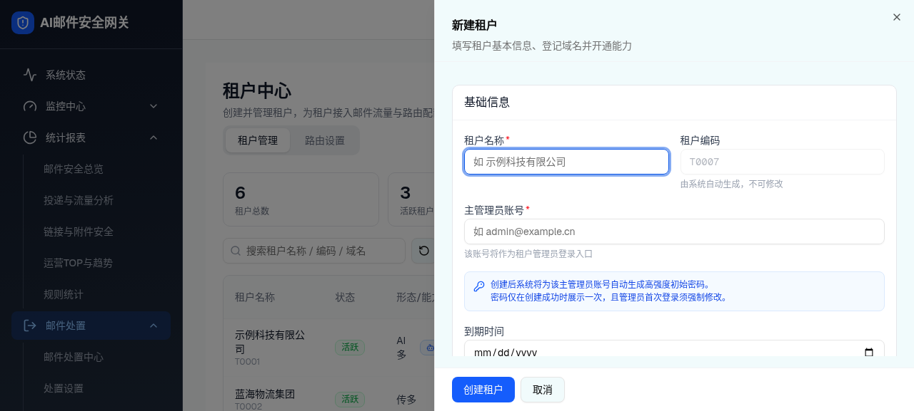
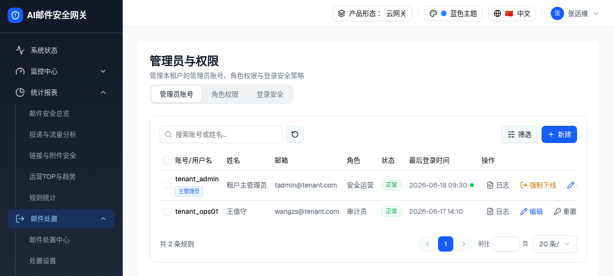
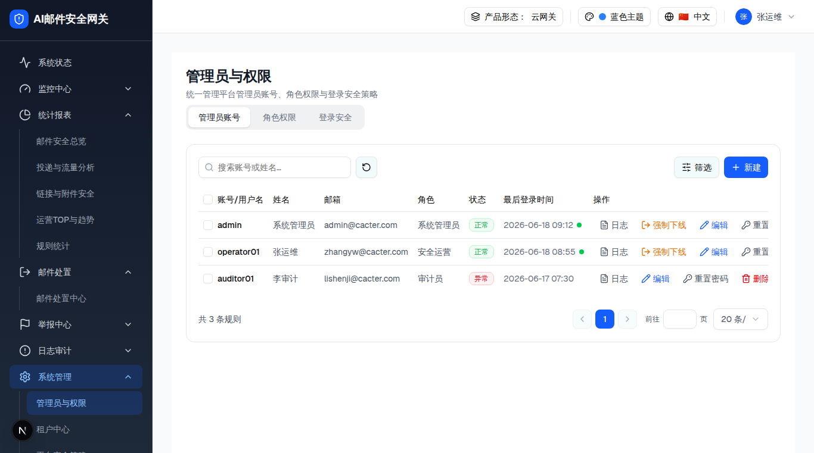
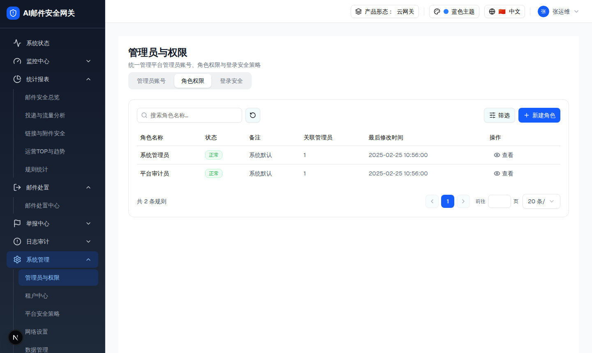
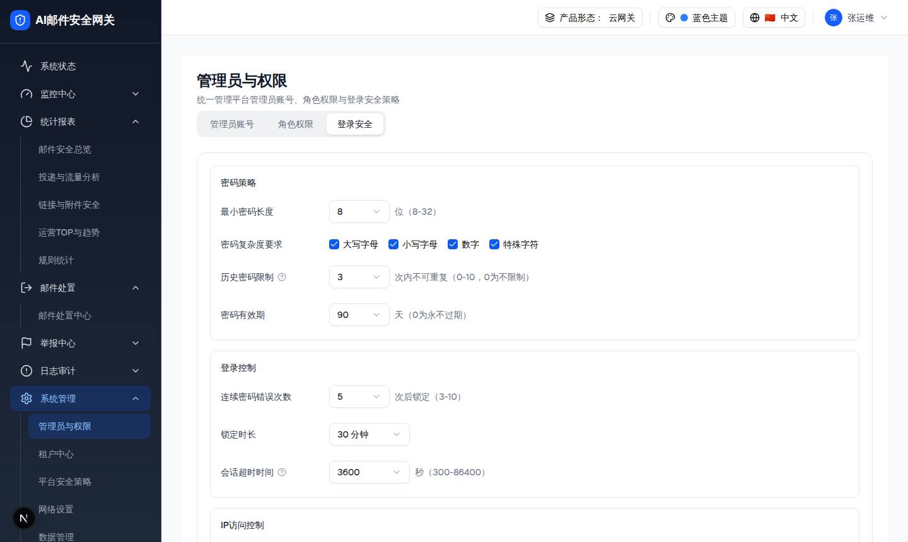
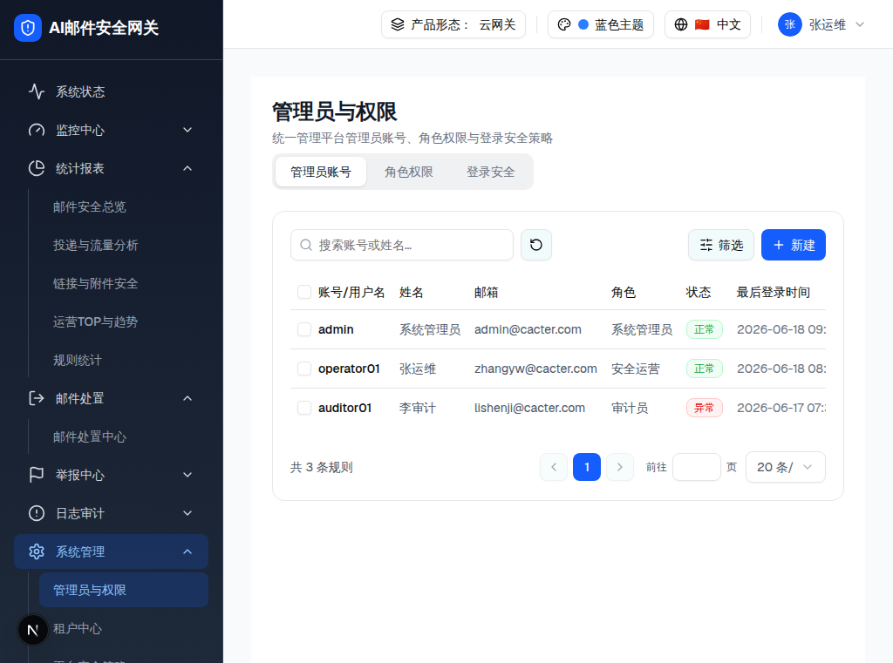
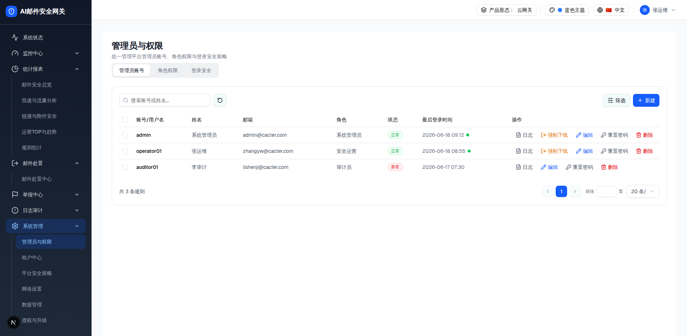

📋 组件列表（点击跳转）
0.3 版本历史
版本 生成日期 demo commit spec commit 变更摘要
v3 2026-07-21 工作区e262be9承接对话中三处修复重生成：① 租户中心创建租户时同步为「主管理员」入库（createTenantPrimaryAdmin，与租户同 id），并在管理员账号 Tab 以「主管理员」徽标展示、隐藏删除入口（删除保护）；② 代登录（租户中心「管理」）动态写入 activeTenantId 并贯通到管理员账号 Tab 的隔离过滤与新建赋值，取代写死常量；③ 首登强制改密（mustChangePassword）承接：凭据弹窗一次性展示初始密码 + 重置密码后清除待改密标记。新增子文件 layer-6-tenant-primary-admin-lifecycle.html；差异 D-006 标记为已解决，新增 D-008/D-009；新增 §0.5「租户首管理员生命周期与创建路径」章节回答改密路径与再建管理员路径 v2 2026-07-16 804efb9e262be9按最新规范重生成：新增 5 形态 × 2 角色矩阵、专属 PRD 业务溯源、功能概览/关联模块/异常处理/批量与单条差异章节；所有组件与交互层补齐形态/角色差异；浏览器重新验证账号 CRUD、批量栏、角色矩阵、登录策略、租户基线、响应式与暗色类，并保存 DOM/计算样式 JSON 证据 v1 2026-07-15 804efb9804efb9初版：三 Tab（管理员账号/角色权限/登录安全）、平台/租户双视角作用域隔离、管理员 CRUD + 重置密码 + 强制下线 + 批量操作、三级 RBAC 权限矩阵（模块可见 × view/edit/approve/delete + 三态联动）、登录安全策略（密码策略/登录控制/IP访问控制/单点登录）+ 租户基线加严 + 二次认证。标注 6 处差异（重点：D-001 全页无 i18n、D-006 生成密码明文显示）；6 项需确认（管理员/角色/登录策略与网关 users/RBAC/authd 映射）
0.4 功能概览
背景与目标
为平台管理员与租户管理员提供统一的账号、角色权限和登录安全策略入口。平台负责平台级管理员、平台角色与安全基线；租户仅管理当前租户的数据，并只能在平台基线之上加严。
功能清单
能力 用户结果 数据边界 形态/角色差异
管理员账号 搜索、筛选、新建、编辑、启停、重置密码、强制下线、删除与批量处理 adminScope + tenantId[Base] 所有形态；[多租户] 平台/租户各看各自数据；[单租户] 仅平台角色 角色权限 维护角色并按模块可见性与 view/edit/approve/delete 配置三级权限矩阵 roleScope[Base] 均可用；[平台管理员] 不含租户专属模块；[租户管理员] 不含系统管理 登录安全 配置密码、锁定、会话、IP 与单点登录策略 平台基线 / 当前租户策略 [平台管理员] 设基线；[租户管理员] 仅可加严，并显示二次认证
主数据流
graph LR
V[产品形态 + viewer] --> S{scope}
S -->|platform| P[平台账号/角色/策略基线]
S -->|tenant| T[当前 tenantId 账号/角色/加严策略]
P --> U[Tab 操作]
T --> U
U --> M[内存 Mock 更新]
M --> F[Toast / 表格 / 表单反馈]
0.5 管理员创建入口 × 产品形态 × 视角（含租户首管理员生命周期）
本章回答三个核心问题（以对话记录 + demo 运行态为准，无独立 spec）：
云网关形态下，租户管理员视角 在「管理员与权限 > 管理员账号」是给本租户 创建租户管理员；平台管理员视角 是给平台 创建平台管理员。
租户中心创建租户时可为该租户创建首个管理员（主管理员） ，其初始密码在凭据弹窗一次性展示，首登强制改密。
给首管理员改密 的路径、以及给该租户再建其他管理员 的路径，均在代登录进入该租户后的「管理员与权限 > 管理员账号」Tab。
0.5.1 「新建管理员」的语义随 产品形态 × 视角 变化
产品形态 视角 「管理员账号 Tab > 新建」创建的是谁 可选角色 数据归属 可见性
云网关（多租户） 平台管理员 平台管理员（adminScope=platform） 含「系统管理员」等平台角色 tenantId=null✅ 显示且可编辑 租户管理员 本租户 的租户管理员（adminScope=tenant）已过滤「系统管理员(role_sys)」，仅租户级角色 tenantId=activeTenantId✅ 显示且可编辑 AI 版·多租户 / 传统版·多租户 平台 / 租户 同云网关：平台建平台管理员、租户建本租户管理员 同上分层 同上 ✅ AI 版·单租户 / 传统版·单租户 仅平台管理员（无租户角色） 系统管理员（单租户无平台/租户之分） 全部角色 单租户全局 ✅（无租户视角，见 §0.1 矩阵「—」）
浏览器证据： 云网关·租户视角新建抽屉角色下拉实测为「平台审计员 / 安全运营 / 审计员 / 自定义运营」，不含「系统管理员」 ，见 screenshots/tenant-new-admin-drawer.png；对应源码 roleOptions = isTenant ? MOCK_ROLES.filter(r => r.id !== "role_sys") : MOCK_ROLES。
0.5.2 租户首管理员创建路径（租户中心）
graph LR
A["租户中心 /admin/tenants

新建租户抽屉：租户编码自动生成（禁用），主管理员账号输入框下方蓝色卡片提示「创建后系统将为该主管理员账号自动生成高强度初始密码。密码仅在创建成功时展示一次，且管理员首次登录须强制修改。」
凭据弹窗「租户创建成功」：登录账号（可复制）+ 初始密码（临时，默认遮罩，可显示/复制）+ 琥珀提示「此密码仅在本次创建后展示一次，关闭后将无法再次查看明文。主管理员首次登录时将被强制修改密码。」+ 复制全部 / 我已保存。此弹窗即 D-006（生成密码明文）的解决方案 。可操作预览见 layer-6 。
0.5.3 首管理员改密路径 与 再建其他管理员路径
目标 入口路径 关键交互 结果
给首管理员改密 租户中心「管理」代登录进入该租户 → 顶栏视角=租户管理员 → 侧栏「系统管理 > 管理员与权限」 → 管理员账号 Tab → 主管理员行「重置密码」
重置密码弹窗：手动输入或点「生成」自动生成 16 位随机密码 → 「确定」
该管理员 mustChangePassword 标记清除，「待改密」徽标消失，需用新密码登录
给该租户再建其他管理员 同上代登录进入该租户 → 管理员账号 Tab → 右上「新建」
管理员配置抽屉：填账号/姓名/手机号/邮箱/初始密码(可生成) + 选角色(无系统管理员) + 状态 → 「确定」
新管理员以 tenantId=activeTenantId、adminScope=tenant 入库，出现在本租户管理员列表
主管理员「tenant_admin」重置密码弹窗：「为管理员『tenant_admin』设置新密码，重置后需用新密码登录」+ 新密码输入框 + 生成按钮 + 「可自动生成 16 位随机密码」。
租户视角「管理员配置」抽屉（再建其他管理员）：基础信息（账号/姓名/手机号/邮箱/初始密码+生成）+ 角色与状态（角色下拉不含系统管理员）。
0.5.4 主管理员标记与删除保护（管理员账号 Tab 实测）

云网关·租户视角管理员账号列表：tenant_admin 带蓝色「主管理员」徽标，操作列为「日志 / 强制下线 / 编辑 / 重置密码」——无删除按钮 （删除保护）；tenant_ops01 为普通管理员，操作列含「删除」。DOM 逐节点比对见下表。
DOM 树比对结果（管理员账号列表 · 云网关租户视角 · activeTenantId=2）
比对项 demo 实际 DOM（agent-browser eval 提取） 规格描述 是否一致
tenant_admin 账号单元格 "tenant_admin 主管理员"（含 badge） 主管理员徽标 ✅ tenant_admin 徽标集合 ["主管理员"] isPrimary=true ✅ tenant_admin 操作按钮 [日志, 强制下线, 编辑, 重置密码]（无删除） 删除保护：隐藏删除 ✅ tenant_ops01 徽标集合 [] 普通管理员无徽标 ✅ tenant_ops01 操作按钮 [日志, 编辑, 重置密码, 删除] 普通管理员含删除 ✅
1. 页面布局结构
1.1 区域划分
区域 名称 元素概览 尺寸 响应式
A 区 页面标题区 h1「管理员与权限」+ 副标题（平台/租户文案不同） px-6 pt-6 pb-2全断点固定 B 区 Tab 导航 3 个 TabsTrigger：管理员账号 / 角色权限 / 登录安全（默认 account） h-auto gap-1 rounded-lg bg-gray-200/60 p-1全断点固定 C 区 Tab 内容卡 白底圆角卡 rounded-xl border p-5，内含各 Tab 的工具栏/表格/表单 自适应宽 <1024px 表格横向滚动 D 区 全局 Toast 底部居中，操作反馈（如"管理员已创建"），2.2s 自动消失 fixed bottom-6 left-1/2全断点固定
1.2 整页默认态截图（平台视角，管理员账号 Tab）
整页默认态（浏览器实际渲染 · 端口 3000 · viewer=platform · 产品形态=云网关）
1.3 视觉规范
属性 值 来源
主色（按钮/选中） bg-blue-600 / hover:bg-blue-700demo 组件 圆角 卡片 rounded-xl、控件 rounded-md demo 组件 状态色 正常=green-600 / 异常=red-600 / 停用=gray-500 / 在线点=green-500 shared.tsx 徽章字体 Geist / system-ui demo globals.css 图标库 lucide-react（Plus/Pencil/Trash2/KeyRound/LogOut/FileText/RefreshCw/HelpCircle/Lock/ShieldCheck 等，14–16px） demo import 暗色模式 全组件带 dark: 变体（本规格预览以亮色为准） demo 组件
2. 逐组件规格
2.1 页面容器 + Tab 导航（UserPermissionPage）
组件元信息
属性 规格 形态/角色差异
demo 组件路径 components/admin/user-permission/user-permission-page.tsx[Base] 全形态共用 Props / 状态 无 Props；useProductProfile().viewer → scope = viewer==="tenant" ? "tenant" : "platform"；toast state；子 Tab 通过 onToast / scope 下传 [Overlay] 多租户形态才允许切换 viewer 作用域推导 租户视角 → 租户作用域；平台视角 / 单租户形态 → 平台作用域（effectiveViewer 仅在多租户形态生效） [单租户] 永远 platform；[多租户] platform/tenant 交互层级数 1 层（Tab 切换，无嵌套；各 Tab 内的抽屉/弹窗见 2.2–2.4 及子文件） [Base] 一致
0 交互层级 0：三 Tab 默认态（可切换）触发路径 ：页面加载默认 account Tab；点击「角色权限 / 登录安全」切换。
点 Tab 切换三个面板（下方为各 Tab layer-0 的精简真实结构；完整元素表见 2.2–2.4）
管理员与权限
统一管理平台管理员账号、角色权限与登录安全策略
管理员账号
角色权限
登录安全
账号/用户名 姓名 角色 状态 操作
admin 系统管理员 系统管理员 正常 日志 · 强制下线 · 编辑 · 重置密码 · 删除 operator01 张运维 安全运营 正常 日志 · 强制下线 · 编辑 · 重置密码 · 删除 auditor01 李审计 审计员 异常 日志 · 编辑 · 重置密码 · 删除
角色名称 状态 备注 关联管理员 操作
系统管理员 正常 系统默认 1 查看 平台审计员 正常 系统默认 1 查看
密码策略
最小密码长度 8 位（8-32）
密码复杂度要求
IP访问控制
访问模式
完整密码策略/登录控制/IP表/单点登录见 §2.4 与 layer-4 。
DOM 树比对结果
比对项 demo 实际 DOM 提取的 HTML 是否一致
Tab 容器 [role=tablist].inline-flex.gap-1.rounded-lg.bg-gray-200/60.p-1，3 个 [role=tab]3 Tab（account 默认 active） 一致 面板机制 demo 同一时刻仅渲染 active 面板（其余 [hidden]） 3 面板均嵌入，切换显隐（便于审查） 已修正：合并 3 面板便于审查 账号面板根 div.rounded-xl.border.bg-white.p-5（97 节点）同结构（精简至 3 行 + 6 列） 一致（截断行数） 账号表列 复选框/账号-用户名/姓名/邮箱/角色/状态/最后登录时间/操作（8 列） 精简为 6 列（省邮箱/最后登录），完整列见 §2.2 精简：完整列见 2.2 角色面板行动作 系统默认角色仅「查看」（无编辑/删除） 同 一致
关键 UI 元素
元素 文案/状态 交互 形态/角色差异
页面标题 管理员与权限 静态 [Base] 一致 副标题 平台：统一管理平台管理员账号…；租户：管理本租户的管理员账号… 随 scope 更新 [Overlay] platform/tenant 文案不同 管理员账号 Tab 默认 active 切换 account 面板 [Base] 一致 角色权限 Tab inactive 切换 role 面板 [Base] 一致 登录安全 Tab inactive 切换 security 面板 [Overlay] 租户面板增加基线 banner/2FA Toast 操作结果；2.2s 自动消失 子组件调用 onToast [Base] 一致
数据与交互流
graph TD
A[useProductProfile viewer] --> B{viewer==tenant?}
B -->|是| C[scope=tenant 租户作用域]
B -->|否| D[scope=platform 平台作用域]
C --> E[各 Tab 按 scope 过滤数据/角色/模块]
D --> E
E --> F[Tab: account/role/security]
F --> G[子操作 onToast 反馈 -> 底部 Toast]
2.2 管理员账号 Tab（AdminAccountTab）· 3 层交互
组件元信息
属性 规格 形态/角色差异
demo 组件路径 components/admin/user-permission/admin-account-tab.tsx[Base] 全形态共用 Props { onToast:(m:string)=>void; scope:ManageScope }[Overlay] scope 决定数据集 状态 list/search/filters/page/pageSize/selected(Set)/open(抽屉)/editingId/draft/pwd/deleteTarget/batchDelete/kickTarget/resetTarget/resetPwd[Base] 一致 数据源 MOCK_ADMINS（前端内存态）；按 adminScope + tenantId 隔离：平台视角仅平台管理员（3 人），租户视角仅本租户管理员（2 人）[平台管理员] 3 人；[租户管理员] 当前租户 2 人 交互层级数 3 层：层0 工具栏+表格（本文件）；层1 新建/编辑抽屉（子文件 ）；层2 弹窗组·重置密码/强制下线/删除/批量删除/筛选/批量栏（子文件 ） [Base] 一致
0 交互层级 0：工具栏 + 数据表格（默认渲染）触发路径 ：进入页面即为 account Tab。可交互 ：点行首复选框 → 出现批量操作栏；点状态徽章 → 正常⇄异常切换（demo 同款 toggleStatus）。
勾选任意行的复选框查看批量操作栏；点「正常/异常」徽章切换状态

层级 0：管理员账号表格（浏览器实际渲染 · 平台视角 3 行）
表格列定义
列序 列名 字段 渲染规则 宽度/对齐 形态/角色差异
1 复选框 - Checkbox；表头全选（仅当前页） 40px [Base] 一致 2 账号/用户名 account font-medium；编辑时不可改left [Overlay] 按 scope 切数据 3 姓名 name 灰字 left [Base] 一致 4 邮箱 email 灰字 left [Base] 一致 5 角色 roleName 灰字 left [租户管理员] 不可选系统管理员 6 状态 status 徽章（正常=绿/异常=红），可点击切换 （toggleStatus） left [Base] 一致 7 最后登录时间 lastLoginTime 灰字 + 在线绿点（online 时，Tooltip「当前在线」） left [Base] 一致 8 操作 - 日志 / 强制下线（仅 online）/ 编辑 / 重置密码 / 删除 260px [Base] 能力一致；保护规则按当前用户/系统管理员判定
行操作（触发层级 1/2 的入口）
操作 图标 触发条件 行为 跳转 形态/角色差异
日志 FileText 任意 window.open(/admin/logs?operator=account) 新标签外链 [Base] 一致 强制下线 LogOut(amber) 仅 online 打开确认弹窗 → 置 online=false → 层2 [Base] 一致 编辑 Pencil(blue) 任意 打开抽屉（账号不可改，密码留空=不改） → 层1 [Overlay] 角色选项按 scope 重置密码 KeyRound 任意 打开重置密码弹窗 → 层2 [Base] 一致 删除 Trash2(red) 任意 打开删除确认（最后 1 个系统管理员不可删） → 层2 [平台管理员] 最后系统管理员保护 新建 Plus 工具栏 打开新建抽屉（emptyDraft） → 层1 [Overlay] 租户侧不含系统管理员角色
DOM 树比对结果
比对项 demo 实际 DOM 提取的 HTML 是否一致
面板根 div.rounded-xl.border.border-gray-200.bg-white.p-5（97 节点）同结构（cp-card 映射） 一致 工具栏 搜索框(w-64,pl-8 + Search 图标) / 重置 icon 按钮 / 筛选 Popover / 新建(bg-blue-600) 同 一致 表格列数 8 列（含复选框列） 8 列 一致 表格行数 平台视角 3 行（admin/operator01/auditor01） 3 行 一致 强制下线按钮 仅 online===true 行渲染（auditor01 无） auditor01 行无「强制下线」 一致 状态徽章 admin/operator01=正常(green)，auditor01=异常(red) 同 一致 批量操作栏 selected.size>0 时渲染 .bg-blue-50 条 勾选后显隐（JS 复刻） 一致
交互层级索引（层 1/2 拆分为独立文件）
层级 名称 触发路径 详情链接
0 工具栏+表格 页面加载 上方内嵌 1 新建/编辑管理员抽屉 点「新建」/行「编辑」→ Sheet 查看详情 → 2 弹窗组（重置密码/强制下线/删除/批量删除/筛选/批量栏） 行「重置密码/强制下线/删除」/「筛选」/勾选 查看详情 →
2.3 角色权限 Tab（RolePermissionTab）· 2 层交互
组件元信息
属性 规格 形态/角色差异
demo 组件路径 components/admin/user-permission/role-permission-tab.tsx[Base] 全形态共用 Props { onToast; scope:ManageScope }[Overlay] scope 决定角色与模块 数据源 MOCK_ROLES 按 roleScope===scope 隔离：平台视角 2 个（系统管理员/平台审计员），租户视角 3 个（安全运营/审计员/自定义运营）[平台管理员] 2 个内置角色；[租户管理员] 3 个租户角色 作用域模块裁剪 getScopedModules(scope)：平台剔除租户专属（安全策略/智能体/高管保护）；租户剔除平台专属（系统管理）[平台管理员]/[租户管理员] 互斥模块树 交互层级数 2 层：层0 角色表（本文件）；层1 角色配置/查看抽屉·三级权限矩阵（子文件 ） [Base] 一致
0 交互层级 0：角色表格（默认渲染）触发路径 ：切到「角色权限」Tab。系统默认角色仅「查看」；自定义角色额外有「编辑/删除」（平台视角无自定义角色，见租户视角
layer-5 ）。
此为平台视角 2 个内置角色；点「新建角色/查看」入口见 layer-3
角色名称 状态 备注 关联管理员 最后修改时间 操作
系统管理员 正常 系统默认 1 2025-02-25 10:56:00 👁 查看 平台审计员 正常 系统默认 1 2025-02-25 10:56:00 👁 查看
共 2 条规则

层级 0：角色表格（平台视角 · 2 内置角色，仅「查看」）
表格列定义
列 字段 渲染 形态/角色差异
角色名称 name font-medium [Overlay] 按 scope 切换角色集 状态 status 徽章：正常=green / 停用=gray（demo 无切换入口，见 D-003） [Base] 一致 备注 remark 空显示「-」 [Base] 一致 关联管理员 linkedAdmins 数字（>0 时不可删除） [Base] 一致 最后修改时间 updatedAt 灰字 [Base] 一致 操作 - 查看（always）；编辑/删除（仅 !isSystemDefault） [租户管理员] 自定义运营显示编辑/删除；平台当前仅内置角色
DOM 树比对结果
比对项 demo 实际 DOM 提取的 HTML 是否一致
面板根 div.rounded-xl.border.p-5（73 节点）同结构 一致 列数 6 列 6 列 一致 平台角色 系统管理员 / 平台审计员（均 isSystemDefault） 同 一致 行操作 系统默认仅「查看」（无编辑/删除按钮） 同 一致 新建角色按钮 button.bg-blue-600「新建角色」同 一致
交互层级索引
层级 名称 触发路径 详情链接
0 角色表格 切 Tab 上方内嵌 1 角色配置/查看抽屉 + 三级权限矩阵 + 删除确认 新建角色 / 查看 / 编辑 / 删除 查看详情 →
2.4 登录安全 Tab（LoginSecurityTab）· 2 层交互
组件元信息
属性 规格 形态/角色差异
demo 组件路径 components/admin/user-permission/login-security-tab.tsx[Base] 全形态共用 Props { onToast; scope:ManageScope }[Overlay] scope 决定基线/租户策略 状态 policy/saved(判 dirty)/saving/resetConfirm/newIp/newRemark/ipErr；租户额外 twoFactorEnabled[租户管理员] 增加 2FA 状态 默认策略 DEFAULT_LOGIN_POLICY：最小密码长度 8、复杂度全开、历史 3、有效期 90 天、连错 5 次锁 30 分钟、会话 3600s、IP 不限制、最大在线 3、超出踢最早[Base] 默认相同 视角差异 平台=设定基线（不受约束）；租户=在基线之上加严 + 二次认证管控（见 layer-5 ） [平台管理员] 基线；[租户管理员] 只可加严 交互层级数 2 层：层0 策略表单（本文件）；层1 IP访问控制展开 + 重置确认（子文件 ） [Base] 一致
0 交互层级 0：登录安全策略表单（平台视角默认）触发路径 ：切到「登录安全」Tab。可交互 ：切换「访问模式」为白名单/黑名单 → 展开 IP 规则表；改任意值 → 底部出现"配置已变更，请保存"（见 layer-4）。
点「访问模式」的白名单/黑名单单选，展开 IP 规则表
密码策略
最小密码长度 8 位（8-32）
密码复杂度要求
历史密码限制 ? 3 次内不可重复（0-10）
密码有效期 90 天（0为永不过期）
登录控制
连续密码错误次数 5 次后锁定（3-10）
锁定时长 30 分钟
会话超时时间 ? 3600 秒（300-86400）
单点登录限制
同一账号最大在线数 3 （1-10）
超出后策略
重置为默认 取消 保存

层级 0：登录安全策略表单（平台视角 · 默认值）
字段清单（4 组）
分组 字段 控件 可选值/默认 校验 形态/角色差异
密码策略 最小密码长度 Select 8/10/12/14/16/20/24/32，默认 8 8-32 [租户管理员] 低于平台基线的选项禁用 密码复杂度 4×Checkbox 大写/小写/数字/特殊，默认全开 - [租户管理员] 平台强制项不可关闭 历史密码限制 Select 0/1/2/3/5/8/10，默认 3 0=不限制 [租户管理员] 仅可加严 密码有效期 Select 0/30/60/90/180/365，默认 90 0=永不过期 [租户管理员] 仅可缩短 登录控制 连续密码错误次数 Select 3/4/5/6/8/10，默认 5 3-10 [租户管理员] 仅可降低阈值 锁定时长 Select 15/30/60/360/1440 分钟 / 永久，默认 30 分钟 -1=永久 [租户管理员] 仅可延长 会话超时时间 Select 300/1800/3600/7200/86400 秒，默认 3600 300-86400 [租户管理员] 仅可缩短 IP访问控制 访问模式 RadioGroup 不限制/白名单/黑名单，默认不限制 非"不限制"时展开 IP 表 [Base] 控件一致 IP 规则 Table + 行内新增 CIDR + 备注 CIDR 校验（如 192.168.1.0/24） [Overlay] 规则按 scope 隔离 单点登录限制 同一账号最大在线数 Select 1/2/3/5/8/10，默认 3 1-10 [租户管理员] 仅可减少 超出后策略 RadioGroup 踢掉最早会话/拒绝新登录，默认踢最早 - [Base] 一致
DOM 树比对结果
比对项 demo 实际 DOM 提取的 HTML 是否一致
面板根 div.rounded-xl.border.p-5（121 节点）同结构 一致 分组卡 4 个 SectionCard（密码策略/登录控制/IP访问控制/单点登录限制） 4 组 一致 平台视角无基线 banner / 二次认证 平台视角 hasBanner=false, has2FA=false 预览未含 banner/2FA（属租户视角） 一致 IP 表条件渲染 ipMode!=="none" 才渲染 IP 表 + 新增行切白名单后展开（JS 复刻） 一致 底部按钮 重置为默认 / 取消(dirty 时可用) / 保存(dirty 时可用) 同（默认 disabled） 一致
交互层级索引
层级 名称 触发路径 详情链接
0 策略表单 切 Tab 上方内嵌 1 IP访问控制展开 + 重置确认弹窗 选白名单/黑名单 · 点「重置为默认」 查看详情 →
2.5 租户视角差异（平台 ⇄ 租户）· 跨 Tab
通过产品形态切换器选择多租户形态，再将角色切为「租户管理员」。三 Tab 均随作用域变化，登录安全额外出现「二次认证」与「安全基线」约束；URL query 不是 demo 的 viewer 状态源。
组件元信息
属性 规格 形态/角色差异
触发来源 useProductProfile().viewer 与产品形态的 supportsTenantView[单租户] 无租户角色；[多租户] 可切换 作用范围 UserPermissionPage 及三个子 Tab [Overlay] 仅 tenant 视角覆盖基础层 证据 tenant-account-table、tenant-role-table、tenant-login-security 截图与 JSON[云网关]/[AI 多租户]/[传统多租户] 结果一致
Tab 平台视角 租户视角 形态/角色差异
副标题 统一管理平台管理员账号… 管理本租户的管理员账号… [单租户] 仅平台文案；[多租户] 随 viewer 切换 管理员账号 仅平台管理员（3 人）；角色可选含「系统管理员」 仅本租户管理员（2 人）；角色选项剔除「系统管理员」（role_sys），创建者均为租户管理员 [Overlay] 数据与角色选项按 scope 角色权限 平台角色（系统管理员/平台审计员）；模块剔除安全策略/智能体/高管保护 租户角色（安全运营/审计员/自定义运营）；自定义角色可编辑/删除；模块剔除系统管理 [Overlay] 角色集/模块树不同 登录安全 设定安全基线（不受约束） 蓝色基线 banner + 「二次认证」分组 + 低于基线的取值置灰锁定 + 「重置为平台基线」；平台强制 2FA 时锁定为开 [Overlay] 租户侧增加 banner + 2FA
完整租户视角截图/DOM/元素表见 layer-5-tenant-view.html →
graph LR
P["平台视角 scope=platform"] -->|"产品形态支持租户 + 角色切换"| T["租户视角 scope=tenant"]
T --> A["账号: 仅本租户 / 角色剔除系统管理员"]
T --> R["角色: 租户角色 / 模块剔除系统管理"]
T --> S["登录安全: 基线加严 + 二次认证"]
3. 数据模型与 API 映射
3.1 前端数据模型（types.ts 原样提取）
type ManageScope = "platform" | "tenant"
interface AdminAccount { id; account; name; phone; email; roleId; roleName;
status:"normal"|"disabled"; online:boolean; isSystemAdmin:boolean;
adminScope:ManageScope; tenantId?; lastLoginTime; updatedAt }
type PermAction = "view"|"edit"|"approve"|"delete"
interface ModulePermission { view; edit; approve; delete } // 值为 null 表示不支持（显示 -）
interface Role { id; name; status; remark; linkedAdmins; isSystemDefault;
roleScope:ManageScope; visibleModules:string[]; permissions:Record<string,ModulePermission>; updatedAt }
interface LoginPolicy { minPwdLength; requireUpper; requireLower; requireDigit; requireSpecial;
historyLimit; pwdValidityDays; maxFailAttempts; lockDuration; sessionTimeout;
ipMode:"none"|"whitelist"|"blacklist"; ipRules:IpRule[]; maxOnline; overflowPolicy }3.2 专属 PRD 的 API 建议（以后端契约为准）
功能 方法 示意路径
管理员列表/增改删 GET/POST/PUT/DELETE /api/v1/admins 重置密码 POST /api/v1/admins/:id/reset-password 强制下线 POST /api/v1/admins/:id/kick 角色增改删/权限矩阵 GET/POST/PUT/DELETE /api/v1/roles 登录安全策略 GET/PUT /api/v1/login-policy
3.3 网关现有 API 映射
⚠️ 遵循 implement.md：以上来自专属 PRD 的建议补全；落地尽量复用网关现有 users/RBAC 与 authd/apiserver 配置。需新增/梳理的映射标 [需确认]，见 §16 需确认事项。
产品 API 网关现有能力 备注
管理员 CRUD apiserver users 表 + 现有用户管理端点 [需确认] 字段映射（isSystemAdmin/adminScope/tenantId 是否已有） 角色权限矩阵 apiserver RBAC（internal/api） [需确认] 三级矩阵（模块可见 × view/edit/approve/delete）存储结构 登录安全策略 authd.cf smtp_auth（max_failures/lockout）、bootstrapcheck、OSG_TRUSTED_PROXIES 等 [需确认] 部分是环境变量/配置系统而非 DB；密码策略/会话超时/单点登录网关是否支持 强制下线 会话/JWT 吊销 [需确认] 是否有 Redis session 主动吊销能力
5. 业务逻辑规格
5.1 作用域隔离（平台/租户）
管理员：平台视角仅 adminScope==="platform"；租户视角仅 adminScope==="tenant" && tenantId===当前租户。
角色：roleScope===scope。租户视角角色选项剔除平台级「系统管理员」。
模块：getScopedModules(scope) — 平台剔除 ["security","agent","executive"]；租户剔除 ["system"]。
5.2 系统管理员唯一性保护
操作 约束 提示
禁用/删除系统管理员 启用的系统管理员 ≤ 1 时拦截 "系统至少保留一个启用的系统管理员" 禁用当前登录账号 id===CURRENT_ADMIN_ID(u7001) 拦截"不能禁用当前登录账号" 批量删除含最后系统管理员 拦截 "选中的管理员中包含最后一个系统管理员，无法删除" 删除已关联管理员的角色 linkedAdmins>0 拦截"该角色已关联 N 个管理员，请先变更其角色"
5.3 权限矩阵联动规则（role-permission-tab）
一级模块勾选 → 批量全选/全不选其下二级；取消 → 清空这些二级的操作权限。
二级取消可见 → 清空该二级操作权限。
操作联动：勾「编辑」自动勾「查看」；取消「查看」自动取消「编辑/审批/删除」。
approve/delete 为 null 的菜单显示「-」（不支持该操作）。
5.4 登录安全基线加严（租户）
平台设基线（DEFAULT_LOGIN_POLICY）；租户仅可加严不可低于基线。strictnessRank 定义各字段严格度（如密码越长越严、锁定越早越严、会话越短越严、historyLimit=0/有效期=0 最弱）。低于基线的取值在下拉中 disabled，保存时校验拦截；基线要求开启的复杂度项对租户锁定为开。二次认证：租户可自管；平台 forceTwoFactor 时锁定为开。
5.5 多租户隔离不变量
对象 读取过滤 写入约束 禁止情况
管理员 平台仅 platform；租户仅 tenant 且 tenantId===当前租户 租户创建记录必须写入当前 tenantId 仅靠前端隐藏跨租户记录 角色 roleScope===scope租户角色不得授权「系统管理」模块 租户选择/修改平台系统管理员角色 登录策略 平台基线与当前租户策略分离 租户结果必须不弱于平台基线 通过构造请求保存弱策略或修改其他租户策略
6. 交互行为
6.1 Toast 反馈
所有增删改/校验失败通过底部居中 Toast 反馈（2.2s 自动消失），如"管理员已创建/已更新/已删除/密码已重置/保存成功"，以及各拦截提示。
6.2 Tooltip
位置 文案
最后登录时间在线绿点 当前在线 历史密码限制 ? 图标 0 表示不限制，最多记录 10 次；新密码不能与最近 N 次重复 会话超时时间 ? 图标 范围 300-86400 秒 租户·二次认证已强制启用徽标 平台策略要求本租户必须开启二次认证，无法关闭
6.3 单条操作与批量操作差异
对比项 单条操作 批量操作 共同保护规则
入口 每行「编辑/重置密码/强制下线/删除」 勾选一行后出现「已选 N 项」操作栏 仅作用于当前 scope 内可见记录 支持能力 完整 CRUD + 日志 + 重置密码 + 强制下线 批量启用 / 批量禁用 / 批量删除 当前账号不可禁用；最后启用的系统管理员不可禁用/删除 确认 下线、删除、重置密码使用对应弹窗 仅批量删除需要确认；启用/禁用直接执行并 Toast 删除前重新校验系统管理员数量 选择范围 当前行 表头全选仅选择当前页；搜索/筛选变化后按当前实现保留 Set 状态 落地后端时必须按 ID + scope 双重校验
7. 异常处理与边界状态
场景 触发/判定 UI 行为 恢复路径 事实来源
必填/格式错误 账号、姓名、密码、角色为空；邮箱/手机/IP 格式非法 字段下即时红色错误；不关闭抽屉/不新增 IP 修正字段后重试 demo 浏览器验证 最后系统管理员 禁用/删除后启用系统管理员将少于 1 阻断并 Toast 先创建或启用另一系统管理员 demo + PRD 当前登录账号 批量或单条禁用当前用户 阻断并 Toast「不能禁用当前登录账号」 移除当前账号选择 demo 角色仍被引用 linkedAdmins > 0删除动作阻断并提示关联人数 先变更关联管理员角色 demo + PRD 租户策略弱于基线 strictnessRank 校验失败弱选项禁用；构造出的弱配置在保存时再次拦截 选择等于或严于平台基线的值 demo + PRD 加载/保存 API 失败 网络失败、超时、并发冲突 demo 为内存态，尚无真实失败态 落地需保留输入、显示可重试错误并刷新版本 [需确认] PRD 目标 空数据 筛选无结果或 IP 规则为空 表格空态；IP 展开显示「暂无 IP 规则」 清空筛选或新增规则 demo 浏览器验证
8. 国际化
项 现状 要求（implement.md）
侧边栏标题 nav.userManagement（已 i18n）四语 页面正文 全部硬编码中文 （标题、Tab、表头、按钮、校验、Toast 文案均无 i18n key）需接入四语 i18n（见 D-001）
待补 key 范围： 页面标题/副标题、3 个 Tab、表头、筛选项、抽屉/弹窗标题、字段标签、校验错误、确认提示与 Toast。目标语言按 implement.md 为四语；不得只翻译导航标题。
9. 响应式与主题
断点 表现
≥1024px 表格全列、工具栏单行、抽屉 sm:max-w-xl/2xl <1024px 表格横向滚动、工具栏/权限矩阵子模块网格降列、抽屉全宽

1024px 断点（浏览器实测） 
1920px 宽屏（浏览器实测） 源码具备 dark: 类，已强制添加根 dark 类验证配色（dark-platform.png）；demo 当前无本页级主题开关，因此暗色只作为样式能力证据，不定义新的用户交互。
15. 与 spec / 约束 的差异标注
编号 位置 约束/spec demo 实现 影响 建议
D-001 全页 implement.md 要求四语国际化 页面正文全部硬编码中文，无 i18n key 高 落地时补全 i18n（四语） D-002 账号状态徽章 - disabled 状态显示为「异常」（红），语义实为「禁用」 低 落地统一为「禁用」文案，避免与告警"异常"混淆 D-003 角色状态列 - 角色有 normal/disabled 状态但 UI 无停用/启用入口，仅展示 低 补角色启停入口或移除该状态 D-004 登录安全·二次认证 租户中心.md（强制 2FA） 2FA 开关仅租户视角有；平台视角无 2FA 基线开关 中 确认平台是否需下发 2FA 基线 D-005 全页 - Mock 前端内存态，保存/删除/重置均不落库 低 原型性质，落地接后端 D-006 租户首管理员初始密码 安全 已解决 ：租户中心创建租户后由「租户创建成功」凭据弹窗一次性遮罩展示 初始密码（默认掩码，可显示/复制/复制全部），关闭后无法再查看明文，并明示首登强制改密。管理员账号 Tab 内的重置密码弹窗仍支持「生成 16 位随机密码」低 证据 screenshots/tenant-credential-dialog.png；剩余：管理员账号 Tab「生成」预览态的明文掩码策略可在落地时统一（当前已非主路径风险） D-007 API/异常态 专属 PRD 描述真实接口、存储与失败处理目标 demo 全部使用前端 Mock，无法验证超时、并发冲突、权限拒绝与持久化 中 后端契约确认后补 API 失败态与并发版本校验 D-008 租户首管理员入库 / 代登录租户身份 对话记录（三处修复） 已在 demo 打通 ：创建租户时 createTenantPrimaryAdmin 与租户同 id 入库主管理员；代登录「管理」动态写入 activeTenantId 并贯通管理员账号 Tab 的隔离过滤与新建赋值（取代写死 CURRENT_TENANT_ID）。数据依赖模块级 Mock 数组，整页刷新会重置（演示环境限制），真实后端持久化下闭环完整低 落地对接后端持久化后即无刷新丢失问题；证据见 §0.5、screenshots/tenant-primary-admin-badge.json D-009 主管理员删除保护 对话记录 已在 demo 实现 ：isPrimary=true 的主管理员行隐藏删除按钮，批量删除亦拦截；「待改密」徽标随 mustChangePassword 展示，重置密码后清除低 落地时后端需同样拒绝对主管理员的删除请求（前端隐藏 + 后端拦截双保险）
16. 需确认事项
遵循 implement.md：以下涉及网关底层映射/多协同 API/新增能力，列此待确认，不自行决定。
编号 事项 类型 说明
Q-001 管理员 CRUD 映射 API 映射 管理员增删改/重置密码是否复用网关现有 users 表与用户管理端点？isSystemAdmin/adminScope/tenantId 字段是否已存在 Q-002 三级 RBAC 权限矩阵 API 映射 模块可见 × view/edit/approve/delete 的矩阵，网关 RBAC 是否支持该颗粒度与存储 Q-003 登录安全策略落点 配置/DB 密码策略/锁定/会话超时/IP访问控制/单点登录：哪些走 authd.cf/配置系统、哪些需 DB？与现有 smtp_auth 阈值如何统一 Q-004 平台/租户分层与基线加严 底层支持 多租户 RBAC 分层、基线加严、租户自管 2FA、forceTwoFactor 网关是否支持 Q-005 强制下线 底层支持 是否有主动吊销会话/JWT（Redis session）能力 Q-006 四语国际化 约束 全页正文需补 i18n（D-001） Q-007 专属 PRD 的 API/表结构提案 契约确认 demo/docs/prd-admin-user-permission.md 中的接口、存储与性能指标是目标描述；需与网关现有 users/RBAC/authd 能力逐项评审后才能作为实现契约Q-008 租户首管理员初始密码下发链路 安全/底层 凭据弹窗当前为前端 Mock 一次性展示（D-006 已解决 UI 侧）。落地需确认：初始密码由后端生成还是前端？是否需要短信/邮件带外下发给主管理员而非仅弹窗展示？mustChangePassword 强制改密是否由 authd 在首登拦截 Q-009 主管理员唯一性与转移 业务规则 demo 已做删除保护（D-009）。待确认：每租户是否恒有且仅有一个 isPrimary 主管理员？是否支持将主管理员身份转移给其他管理员？删除租户时主管理员账号如何清理